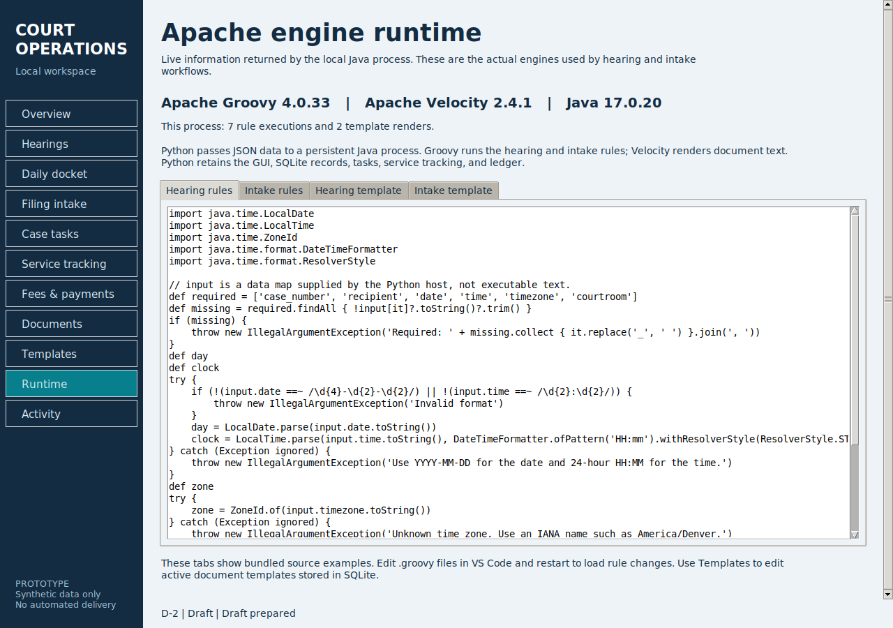

From court workflows to a working prototype
I wanted to understand how court software turns administrative requirements into forms, validation rules, and documents. The desktop prototype now uses a Python interface, actual Groovy rules, and actual Velocity templates in a local Java process.
Inside the application
Actual screenshots from the running Python app, using fictional sample records. Select an image to open it at full size.


Quick walkthrough: reschedule a hearing
- Download and extract the app. Run
python app.py, then choose Load sample records on a fresh workspace. - Open Hearings and select case DEMO-2026-1042. Set the date to 2026-11-13 and time to 11:00.
- Choose Save record, then Prepare draft. Compare the old and new hearing details in the preview.
- Open Documents to inspect the draft, record local review, or export a text copy. Preparing the same saved revision again reuses its existing draft.
The ten-screen PDF guide also covers filing intake, case tasks, service tracking, payment records, the daily docket, document review, template editing, and verifying the actual Apache engines in Runtime.
What the application covers
Save hearing details validated by Groovy, filter the docket by date and courtroom, and flag identical start times.
Run a Groovy checklist against administrative fields and attachment metadata, then route submissions to review, follow-up, or manual classification.
Assign owners, enter due dates, and track overdue work. Categories include interpreter requests and records requests.
Record service attempts, staff-reported outcomes, dates, and notes, with a summary available for export.
Track charges, payments, waivers, and balances in integer cents. Unique references prevent repeat entries; reversals retain the original record.
Render notices and summaries with Apache Velocity, including #if conditions and #foreach loops; review drafts and export text copies.
What I focused on
- Turning requirements into behavior: defining which inputs are required, what happens when information is missing, and where staff review is needed.
- Keeping records consistent: detecting stale edits, reusing duplicate drafts, superseding earlier versions, and retaining ledger corrections.
- Testing the awkward cases: missing fields, daylight-saving changes, repeated submissions, overpayments, reversals, and upgrades from the earlier database schema.
How Groovy & Velocity are incorporated
hearing.groovy for required fields, date/time, and time-zone checks. Saving a filing runs intake.groovy to return its review queue and missing-item messages..vm template uses #if and #foreach to choose wording and list missing items.The Python GUI exchanges JSON with a persistent local Java process hosting both Apache engines. Python retains SQLite storage, document revisions, and the task, service, ledger, and docket workflows. There is no silent Python simulation fallback.
The Runtime screen reports live versions and execution counts, with tabs showing the bundled Groovy rules and Velocity template examples. Integration tests confirm that changing a Groovy script changes routing and that Velocity evaluates real conditions and loops.


Tested with Apache Groovy 4.0.33, Apache Velocity 2.4.1, and Java 17. All 40 automated tests pass, including six Apache engine integration tests. The main screens and hearing-notice workflow have been smoke-tested on Linux. This remains a personal prototype using fictional records; it does not send notices or process money.
Where to find the Groovy & Velocity code
Download the current app ZIP below, right-click it and choose Extract All, then open the extracted court_operations_desk folder. The engine folder sits alongside app.py. If it is missing, download the current ZIP and extract it into a new folder.
engine/rules/hearing.groovy— validates hearing fields, dates, times, and time zones.engine/rules/intake.groovy— checks filing requirements and selects the review queue.engine/Runner.groovy— connects Python requests to the Groovy and Velocity engines.engine/templates/hearing_notice.vm— formats hearing notices from saved case data.engine/templates/intake_summary.vm— generates intake summaries with conditions and loops for missing items.
In VS Code, choose File → Open Folder and select the newly extracted court_operations_desk folder. Start with intake.groovy and intake_summary.vm to follow the rules and document template together. The app’s Runtime screen also displays source examples.
Extract the ZIP and run python app.py using Python 3.11+ with Tk support and Java 17+. The Groovy and Velocity libraries are bundled. A Windows launcher, screenshot tutorial PDF, setup guide, sample records, and tests are included.